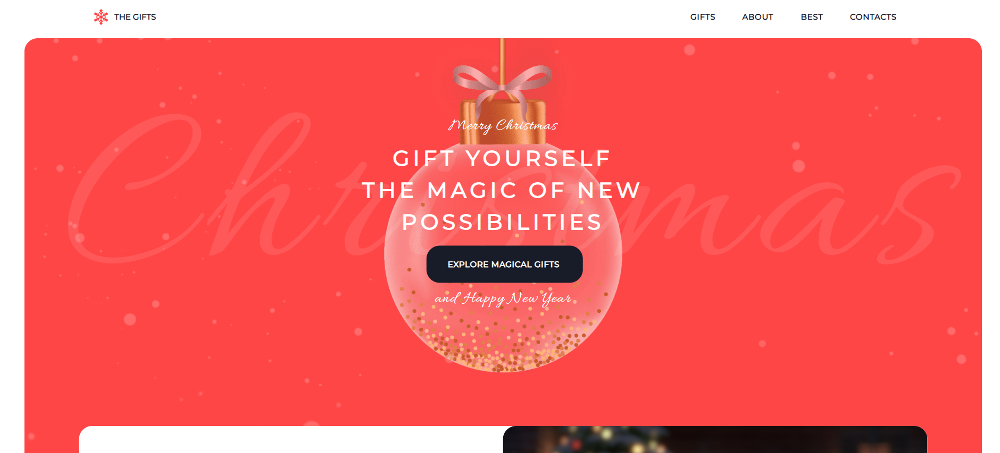
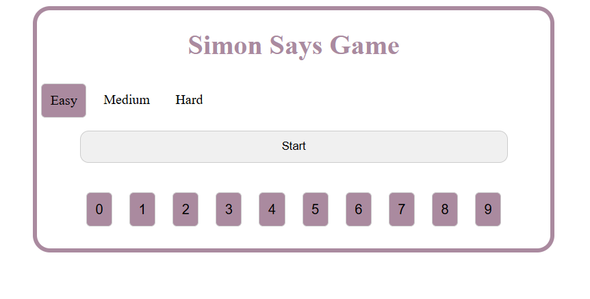

Anastasia Blinova
Software Testing Engineer
About me
Software Testing Engineer with more than 4 years experience
1. Experience in Function and Domain Testing; GUI Testing; Usability testing; Compatibility Testing; Module and Integration testing; Risk-based Testing; Exploratory testing
2. Experience in working with such SDM as Scrum
3. QA activities
• Requirements/User stories analysis
• Test-Cases/Check-lists writing according to user stories
• Run Test-Cases
• Bug Reporting in JIRA and Azure DevOps
• Participation in project meetings
• Communication with project team and customer
• Creation of Test Result Report
• Database/PostgreSQL
4. Mentoring of newcomers on the project
5. I'm a responsible person with a positive attitude to work, striving for self-development, have good communication skills and problem-solving skills
Education & Certificates
EDUCATION:
Name of the Education Establishment: MINSK STATE LINGUISTIC UNIVERSITY
CERTIFICATES:
EPAM: AI Literacy Program, 2024
Tricentis: Tricentis Tosca Fundamentals - Automating web application testing (AS1), 2023
Foreign Languages
English: B2
German: A1
Skills
Engineering Practices
- DWH fundamentals
- Static Code Analysis
- Test Strategy
- Version Control
- Requirements Analysis
- Estimation and Work Planning
Technical Skills
- Testing: Functional Testing, Automated Testing in JS, Regression Testing, Exploratory Testing
- Test Design: Test Strategy Development, Test Plan Development, Test Cases Development, Risk-Based Testing
- Automation: Test Automation Framework Architecture in JS, Testing Automation Basics
Leadership and Soft Skills
- Communication
- Teamwork
- Adaptability
- Problem-solving
Management
- Scrum
- Agile
- Kanban
Technologies
- Platforms: SAP Fiori, Amazon Web Services
- Standards: Git
- Frameworks: WebdriverIO, Test Runners in JS
- Languages: JavaScript, SQL
- Tools: Azure DevOps Server, Selenium, Jira, Tricentis Tosca, DBeaver
Work Experience
Jan-2024 - Oct-2024 - EPAM Systems
Project Roles: Tester
Client: Priceline.com
Responsibilities:
• Requirement analysis in RTR (Finance) stream
• Test case and test cycle creation in Zephyr Scale
• Performing Functional Testing (SAP Fiori, SAP GUI)
• Interface testing (Serengeti, MDG)
• Analyzing and reporting defects using JIRA (Zephyr Scale)
• Client support with GLSU installation and configuration on AWS
• User guide creation on Confluence
• Client teams supporting during UAT
• Preparation of end-to-end test scenarios for SIT phase
• Tools and Technologies: SAP GUI, SAP Fiori, SAP, Zephyr plug-in for JIRA, Jira
• Team: Testing team: 3 testers, 9 SAP Consultants
Code
return a + b;
}
const result = add(5, 3);
console.log("Сумма:", result);
My Projects

